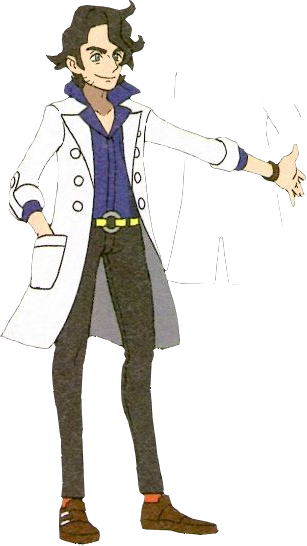

HM02 Fly, according to descriptions in PKMN XY, is as such: The user soars and then strikes its target on the next turn. This can also be used to fly to any familiar town. The method of acquisition in PKMN XY is easy: Professor Sycamore walks up and gives it to you in Coumarine City! It's very handy, no? He says it himself:
Here, being Coumarine City, the specifically at the monorail station. Coumarine City is split into two parts, with the Pokémon Center, gym, ect being nestled in the cliffsides, and the docks, vendors, lighthouse, ect being by the sea. The monorail sation is no different, there's the Seaside and Hillcrest stations.
It's important to note that, as stated, Coumarine is split into two parts: the port and the cliffsides. The Pokémon Center of Coumarine City is only located in the cliffs portion of Coumarine, so use of the monorail is necessary if one wants to reach the Coumarine port without going through route 12. Before we get into more speculation, let's talk more about Coumarine City itself:
Coumarine City is nestled between Route 12(Fourrage Road), and Route 13(Lumiose Badlands). Nearly every route and city in the game has an alternative title and a written description that provides more context to the area, and Coumarine City is no different:
"The city where bay and butte are bound."
"An exclusive resort area made popular thanks to its clear skies and mild atmosphere."[Map Description]
Professor Sycamore, after handing the player character the HM02, leaves the Seaside station. From his own words, he says he's in Coumarine specifically to give the player character the HM02, and he leaves via the front door of the monorail station. There are some options here we can speculate on...
First, how did Professor Sycamore arrive at the Seaside monorail station? Well, there's two ways into that particular building: via the front foor the player character enters, and via the monorail itself.
You'll see that when the player character enters the monorail, Professor Sycamore is there with the champion, Diantha. These two are on a first name basis with one another, implying that they have some kind of friendship. They both speak on mega evolution(a power that the player character has only just obtained) the nature of its power, and its origins. It can be assumed that Professor Sycamore and Diantha arrived at the monorail station together, since they are on first name basis, speak familiarily with one another, and are both on the exiting platform at the same time when the player character sees them. Professor Sycamore leaves via the front door, and Diantha follows soon after, so the player character the freedom to use the monorail if they wish. Since the player character did not see Professor Sycamore in Coumarine until they meet at the monorail station, it can be assumed that he and Diantha had just arrived to the Coumarine Docks via the monorail.
I'm not implying Professor Sycamore and Diantha are liars or anything! But is there more to them being in Coumarine City at that point than what meets the eye? It's fine if Professor Sycamore is only in Coumarine to give the player character HM02, but that seems like an awful lot of effort to go through for one professor, don't you think?
Let's think... Professor Sycamore would have to leave Lumiose City, travel to Coumarine(by HM02 Fly or by walking), ride the monorail, and then return back to Lumiose City. All of that just to give the player character HM02 Fly? With the champion, no less? I'm not saying Professor Sycamore isn't a kind man! But could there be a bigger reason for him being in Coumarine than what meets the eye?
When the player character defeats Ramos, they'll get their Pokédex updated by Dexio and Sina. If you're unaware, Dexio and Sina are Professor Sycamore's research assistants, former ace trainers who went on an adventure similar to the player character. At this point, the player character would have met them a few times since then. The player character's Pokédex will be updated for the Mountain Kalos Pokédex, which will include many Pokémon from the Lumiose Badlands(Route 13). Route 13, the Lumiose Badlands, actually leads right into Lumiose City, which acts as a central hub to Kalos itself. Why does any of this matter?
Well, at this point in the game, Lumiose City hasn't been fully opened up yet. That is to say, the player cannot fully explore Lumiose and enjoy its amenities because Lumiose City is experiencing black outs and energy issues. At this stage of the game, the player hasn't even seen Prism Tower yet! Ingame, the power situation is cited to be an issue at the power plant itself, as the electric-type Gym Leader Clemont has been doing everything in his power to keep the city running during these blackouts.
The powerplant in question is located in the Lumiose Badlands, Route 13. Indeed... the very route that Dexio and Sina meet the player character on, the route bordering Coumarine City! Inside the power plant, the player character will meet two masked heroes, who mention that they were there to solve the crisis but the player character beat them to the punch. "Oh my! You chased off that mysterious bunch before we could even get here? Well, I guess there's always room for more defenders of Kalos! Let me heal your Pokémon as thanks!" Red Masked Hero
Now, it may come as a surprise to you, but those masked heroes are Dexio and Sina. I know... crazy, right? But it's true! Let's add everything together:
Professor Sycamore and Diantha are spotted in Coumarine City together. Coumarine City is right next to the Lumiose Badlands, where the powerplant is. The rolling blackouts, caused by Team Flare, are thwarted by the player character - and Professor Sycamore's assistants. The next time the player character sees Professor Sycamore, it's in Lumiose City itself, now with power.
With all of that laid out, doesn't it stand to reason that Professor Sycamore was in Coumarine City for reasons beyond delivering the player character HM02? To me, it seems like he and the champion had business besides that, and delivering the HM02 was a happy coincidence.
Professor Sycamore's appearance in Coumarine City is not chance - he wasn't just randomly there for fun - he was there because of the power plant situation. He is characterized as someone who very much travels and is always around. Characters from all over Kalos will talk about him, he'll appear all over the place, he's calling the player character and their friends, and yet he's suspiciously absent in the one place where you'd think he'd be: situations involving Team Flare. That is big stuff, isn't it? It's important to note that there's a degree of separation when it comes to what Professor Sycaamore's goals are and what the player character's are.
He does not pressure the player character or their friends, he makes suggestions. He very purposely avoids calling them and saying things like 'Go stop Team Flare at the power plant!!!', he avoids pressuring them in any way, and his suggestions for how to proceed in their journey are just that: suggestions. He wants the player character to do what they want and gain experience accordingly, he does not want them to check off a list of to-dos. To him, the Team Flare situation isn't something that the player character should have anything to do with, because it is big and scary and full of criiminals and people who will hurt them. Who would send children to deal with that?
I hold that Professor Sycamore knows a lot more of what's going on than he lets on when it comes to Team Flare, and that his way of handling it is behind-the-scenes diffusion and crisis management: he is aware of what's going on.
 After Professor Sycamore and Diantha's conversation in Coumarine City, the player might notice that Diantha herself doesn't appear again in the story. The player character won't see her again until the Pokémon League itself. She's often critisizied for being a hands-off champion who does not interfer with the story or care about Team Flare, but what if that was on purpose? Diantha, who was right next to Route 13 at the time of Team Flare sabotaging in the power plant, suddenly disappears from any and all Team Flare related things until endgame?
Doesn't it stand to reason that Professor Sycamore and Diantha talked together on the monorail, about the powerplant and Team Flare? He does know about Team Flare at this point, he sent his assistants to stop them. Diantha has spoke to Lysandre at least once. I think that not only does Professor Sycamore knows what Team Flare and Lysandre are doing(though not the lengths he'd go), so does Diantha. I also think that Professor Sycamore might have asked Diantha to step back and try to allow him to reason with Lysandre before she took any action. It's very likely that they had a conversation about Lysandre. It should be stated that the next time Professor Sycamore meets the player character, it's in Lumiose City with Lysandre himself. He's trying to mediate and get everyone on the same page. The meeting in Lysandre Cafe is an entirely other thing that I'll talk about in a later thing.
Another point to make is: Professor Sycamore's assistants assume masked personas when dealing with Flare-related things. Professor Sycamore handles Flare-related things delicately, and Diantha is almost entirely hands-off with Flare-related things. Diantha is a very popular actress and champion, and Professor Sycamore is a popular and personable professor. The two are both very important people in Kalos. Both personally are associated with Lysandre, who is the leader of Team Flare. Team Flare, in Pokémon XY, is an expansive and well-funded organization fullof society's elite. The game fails to emphasize this point but it should be stated that Team Flare is more supported than one thinks, and associates of Team Flare are everywhere, including in the Elite 4. This subterfuge isn't just for a laugh(though the games do present it very lightheartedly), butdone out of necessity: if Dexio and Sina didn't adopt an alternative persona, they themselves could be in danger for interferring in the Power Plant situation. Why bring it up? Well... where else would two popular people have a discreet conversation than in a monorail, a private, transient space, where they're both sure nobody else can be listening in? And it's not necessarily suspicious for a ladies' man like Professor Sycamore to be seen at an exclusive resort with his friend, the glamorous Diantha, right? It's a good cover for as to why they're not in the Powerplant directly: they know Lysandre is observing them, I think. It's important that the two of them act cautiously if they're going to stand against Lysandre.
I think that HM02 is proof of Professor Sycamore's care in a lot of ways. Not just in the practical sense: yes, it's a helpful item for the player character. But in a more nuanced sense, too: this is him protecting the player character from the big things going on. He is here to give you this item and no other reason! How silly and goofy, right...?
Hmm...
Speaking of HM02 Fly. He's bound to use it, isn't he? Can you imagine Professor Sycamore trudging through Route 13, caked in sand and miserable, his labcoat flying over his head? I can't. Remember, Coumarine City is on Route 13, separated by cliffs. You see Sycamore again in Lumiose City shortly after the powerplant situation, so it stands to reason that he used HM02 Fly to get back to Lumiose. Let's delve into it:
The Pokémon that can lean HM02 Fly, as of Gen 6, are:
Generation 1 (Kanto)
Non-Legendary Pokémon:
Legendary Pokémon:
Generation 2 (Johto)
Non-Legendary Pokémon
Legendary Pokémon:
Generation 3 (Hoenn)
Non-Legendary Pokémon:
Legendary Pokémon:
Generation 4 (Sinnoh)
Non-Legendary Pokémon:
Legendary Pokémon:
Generation 5 (Unova)
Non-Legendary Pokémon:
Legendary Pokémon:
Generation 6 (Kalos)
Non-Legendary Pokémon:
Legendary Pokémon:
So, out of this list, Professor Sycamore does have one Pokémon that can learn HM02 Fly: Charizard! He uses a charizard to battle against the player character. Does that mean he actually used HM02 with Charizard to fly? Him having a Charizard doesn't necessarily mean he doesn't have, say, a Hawlucha or a Pideot. But it all fits together rather nicely, doesn't it? In the manga, he is depicted riding a Gogoat, so it's not like he's unfamiliar with riding Pokémon. I think it would make a lot of sense for him to have HM02 Fly on Charizard and for him to fly on Charizard, and thus we end up full circle:
Professor Sycamore flew on Charizard back to Lumiose City after the Powerplant situation was resolved.
What do you think? Do you agree, disagree, or have more detials to add? Let me knw!